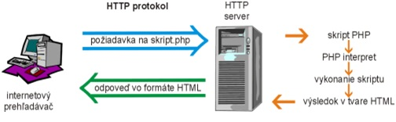

Základné technológie na tvorbu www stránok
PHP je skriptovací jazyk pre tvorbu dynamických webových stránok. V oblasti webových technológií na strane servera patrí medzi najpoužívanejšie nástroje. Je freeware, nezávislý na platforme (existujú verzie pre Windows, UNIX, LINUX). Táto technológia nie je viazaná na žiadny server, najlepšie je však implementovaná na serveri APACHE. Skripty PHP sa vkladajú do (X)HTML kódu.
PHP je vyšší programovací jazyk, je interpretovaný, štruktúrovaný (bol inšpirovaný jazykmi podporujúcimi štruktúrované programovanie, veľa vlastností prebral od jazyka C a Perl). V neskorších verziách bol rozšírený o možnosť používať objekty.
PHP je nástupcom produktu PHP/FI (PersonalHomePage/Forms Interpreter), ktorý vytvoril RasmusLerdorf v roku 1995.
PHP dnes používa niekoľko stoviek tisícov vývojárov a inštalované je na niekoľkých miliónoch serverov (asi 20 % domén internetu).
PHP je skriptovací jazyk - jeho skripty sa vkladajú do HTML kódu. PHP je interpret - pri každom spustení skriptu je jeho zdrojový kód prevádzaný príkaz po príkaze do spustiteľného kódu. Neexistuje teda žiadna binárna verzia zdrojových súborov PHP skriptov.
Ideálna kombinácia je, ak máme rozbehnutý HTTP server s podporou PHP. Vtedy to vyzerá nasledovne:
Internetový prehľadávač (napr. Internet Explorer, Firefox a pod.) vyšle požiadavku na zobrazenie dokumentu - skriptu PHP. Požiadavka dorazí k HTTP serveru, ten zistí (podľa toho, ako je konfigurovaný) že dokument je skript a preto ho pošle PHP interpretovi. PHP interpret skript vykoná a výsledok behu skriptu (väčšinou to bude HTML formát) vráti späť HTTP serveru. Ten výsledok odošle internetovému prehliadaču, ktorý ho zobrazí používateľovi za počítačom. Používateľ si ani nemusí všimnúť, že do hry vstupuje nejaký PHP interpret, a pokiaľ si nevšimne inú príponu zobrazeného dokumentu (zvyčajne php3, php4, php, phtml), javí sa mu to ako úplne bežná stránka na internete. V tejto konfigurácii (uvedomme si, že na fyzicky jednom a tom istom počítači môže byť spustený internetový prehliadač aj HTTP server) môžeme plne využiť to, čo nám HTTP sever s podporou PHP ponúka. Je však potrebné konfigurovať HTTP server tak, aby správne fungoval a podporoval PHP skripty.